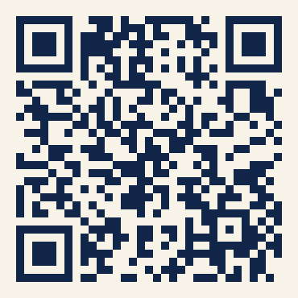

Warum Orkas die erfolgreichsten Jäger der Meere sind
Kein Tier im Ozean hat ein so breites Beutespektrum wie der Orka: Robben, Heringsschwärme, Haie – sogar der Blauwal, das größte Tier der Erde, steht auf der Liste. Orkas gelten als die vielseitigsten Jäger im gesamten Tierreich. Der Grund dafür ist nicht rohe Kraft, sondern vor allem vier Dinge: Gemeinschaft, Koordination, Neugier und Kultur.
Woher kommt eigentlich der Name?Wissenschaftlich heißt der Orka Orcinus orca – benannt nach „Orcus", dem römischen Gott der Unterwelt: Wegen seiner schwarzen Farbe und seines Rufs als gefürchteter Jäger wurde er sprichwörtlich dem Totenreich zugeordnet. Im Deutschen heißt er auch Schwertwal, nach der bis zu 1,80 Meter hohen, kerzengerade aufragenden Rückenflosse der Bullen, die wie ein Schwert aussieht. Der englische Name „Killer Whale" geht auf Walfänger zurück, die die Tiere ursprünglich „whale killer" nannten, weil sie beim Jagen sogar andere Wale angriffen – mit der Zeit wurden die beiden Wörter vertauscht.
Gemeinschaft
Orkas leben in matrilinearen Familienverbänden, angeführt von den ältesten Weibchen, oft über mehrere Generationen hinweg. Söhne bleiben ihr ganzes Leben bei der Mutter, Beute wird geteilt, Wissen wird weitergegeben – das sichert das Überleben der ganzen Gruppe.
Koordination
Für die Jagd arbeiten Orkas im Team: Sie erzeugen gemeinsam Wellen, um Robben von Eisschollen zu spülen, treiben Heringsschwärme zu dichten „Bällen" zusammen oder ermüden gemeinsam sogar ausgewachsene Blauwale. Manche Gruppen stranden sogar bewusst kurz am Strand, um Robben zu fangen – und helfen sich danach gegenseitig zurück ins Wasser.
Neugier & Intelligenz
Mit einem der größten Gehirn-Körper-Verhältnisse unter Meeressäugern sind Orkas extrem lernfähig. Sie probieren neue Jagdtechniken aus, lösen Probleme kreativ und geben erfolgreiche Strategien gezielt an die nächste Generation weiter.
Kultur & Kommunikation
Jede Orka-Gruppe hat ihren eigenen „Dialekt" aus Klicklauten und Pfiffen. Manche Populationen jagen nur Fische, andere nur Robben oder Wale – reine Gewohnheit, nicht Genetik. Dieses über Generationen weitergegebene Wissen macht Orkas zu den anpassungsfähigsten Jägern der Welt.
Die 5 verrücktesten Orka-Fakten
Bei so viel Cleverness bleibt auch Zeit für Quatsch. Diese fünf Fakten sind einfach zu schön, um sie nicht zu teilen:
Lachs als Hut
1987 trug eine Orka-Dame im Puget Sound plötzlich einen toten Lachs auf dem Kopf – ein Trend, der sich für einige Wochen durch mehrere Gruppen zog und dann abrupt wieder verschwand. Im Oktober 2024 wurde ein Orka namens „Blackberry" am selben Ort mit Lachs-Hut fotografiert – 37 Jahre später. Ob echtes Comeback oder Zufall: Die Bilder gingen um die Welt.
Boote rammen als Trendsport
Seit 2020 rammen Orkas vor Gibraltar und Portugal gezielt Segelboote und Ruder – über 500 gemeldete Vorfälle, mehrere Boote gesunken. Manche Forschende vermuten, eine Orka-Dame namens „White Gladis" habe nach einem traumatischen Erlebnis damit begonnen – andere haben es ihr einfach nachgemacht.
Die Leberdiebe
Zwei männliche Orkas namens „Port" und „Starboard" haben sich vor Südafrika darauf spezialisiert, Weißen Haien chirurgisch präzise nur die Leber herauszuoperieren. An einem einzigen Tag im Februar 2023 erlegten sie 17 Haie. Sobald die beiden auftauchen, fliehen Weiße Haie kilometerweit aus der Region.
Der sprechende Orka
Die Orka-Dame „Wikie" lernte 2018 in einem französischen Meerespark, menschliche Wörter nachzuahmen – darunter „Hello", „Bye bye" und sogar den Namen ihrer Trainerin „Amy". Es war der erste wissenschaftliche Beleg, dass Orkas gezielt neue Laute imitieren können.
Spa-Tag am Kiesstrand
Orkas vor Vancouver Island suchen gezielt flache Kiesstrände auf, lassen dabei bewusst Luft aus der Lunge ab, um tiefer zu sinken, und reiben sich stundenlang an den glatten Steinen den Rücken – vermutlich zur Hautpflege. Der Strand gilt als so wichtig, dass er als Schutzgebiet ausgewiesen ist.
Gut zu wissen:Trotz seines Beinamens „Killerwal" wurde in freier Wildbahn noch nie ein tödlicher Angriff eines Orkas auf einen Menschen dokumentiert. Die wenigen bekannten tödlichen Zwischenfälle passierten ausschließlich in Gefangenschaft – nie im offenen Meer.
Inhalte folgen. Hier gehört rein: der Vereinszweck (was der Förderverein
laut Satzung unterstützt), das Gründungsjahr, ein kurzer Rückblick auf
wichtige Stationen, und in ein bis zwei Sätzen, warum es den Verein
gibt und wem er hilft.
Was wir fördern
Projekte & Anschaffungen
Der Förderverein hat den Legoland-Ausflug der Hortgruppe mit 300 € unterstützt – ein herzliches Dankeschön an alle, die diesen schönen Tag möglich gemacht haben!
Der Nikolaus kommt zu BesuchDer Förderverein hat den Legoland-Ausflug der Hortgruppe unterstützt – ein herzliches Dankeschön an alle, die diesen schönen Tag möglich gemacht haben!
Weitere Projekte folgen. Hier gehören weitere Beispiele rein, was mit
den Spenden- und Mitgliedsbeiträgen finanziert wurde oder werden soll
– z. B. Spielgeräte, Ausstattung der Lernwerkstätten oder besondere
Aktionen.
Mitglied werden
Wie man dabei sein kann
Unterstütze uns als Mitglied: Du entscheidest mit, wofür die Spenden
eingesetzt werden – und wenn du magst, kannst du dich auch aktiv
einbringen, zum Beispiel mit einem eigenen Amt im Verein. Erst durch
Menschen wie dich wird das alles hier möglich.
Das Formular zeigt aktuell ein allgemeines Beispiel-Layout (übliche
Felder einer Vereins-Beitrittserklärung), noch nicht die offizielle
Version mit den tatsächlichen Vereinsdaten. Hier gehört außerdem
rein: wie die Mitgliedschaft abläuft und die Höhe des
Mitgliedsbeitrags.
Spenden
Den Verein unterstützen

Mit Ihrer Spende schenken Sie den Kindern unserer Kita neue Erlebnisse, Ausflüge und Anschaffungen, die sonst nicht möglich wären. Schon eine kleine Geste macht einen großen Unterschied – herzlichen Dank für jede Unterstützung!
Beispielansicht – sobald die echten Kontodaten vorliegen, wird hier
ein echter Girocode (mit IBAN und Kontoinhaber) eingebunden, den
Banking-Apps direkt einlesen können. Außerdem: Hinweis zu
Spendenquittungen, falls der Verein gemeinnützig ist.
Termine
Veranstaltungen
Inhalte folgen. Hier gehören anstehende Termine rein – z. B.
Mitgliederversammlung, Vereinsfeste, Flohmärkte oder andere Aktionen.
Satzung & Downloads
Zum Nachlesen
Inhalte folgen. Hier gehören Downloads rein – z. B. die Vereinssatzung
als PDF, Protokolle der Mitgliederversammlung und ggf. das Logo für
Presse/Partner.
Kontakt
So erreicht man uns
Inhalte folgen – hier kommen Kontaktdaten hin, sobald sie feststehen.
Pflichtangabe
Impressum
Angaben gemäß § 5 DDG
Förderverein Kita Reischlestraße e. V.
Reischlestr. 51
86153 Augsburg
Noch offen, bitte bestätigen/nachtragen:
Vertretungsberechtigter Vorstand nach § 26 BGB (vermutlich Nicola Seel, Jasmin Dantele, Eduard Schmeisser-Rüb – bitte bestätigen, wer laut Satzung tatsächlich vertretungsberechtigt ist)
Verantwortlich für diese Website ist Matthias Stilwell (Kita-Leitung),
der die Seite über GitHub Pages veröffentlicht.
Förderverein Kita Reischlestraße e. V.
Reischlestr. 51
86153 Augsburg
Noch offen: eine E-Mail-Adresse für Anfragen zum Datenschutz –
gesetzlich vorgeschrieben nach Art. 13 DSGVO, bitte nachtragen.
Hosting über GitHub Pages
Diese Website wird über GitHub Pages gehostet, einen Dienst von
GitHub, Inc. bzw. GitHub B.V. Beim Aufruf der Seite verarbeitet
GitHub automatisch technische Server-Log-Daten (u. a. IP-Adresse,
Datum und Uhrzeit des Zugriffs, aufgerufene Seite, verwendeter
Browser), um den Betrieb der Server sicherzustellen. Details dazu in
der Datenschutzerklärung von GitHub.
Sprachauswahl (Google Übersetzer)
Für die Sprachauswahl oben auf der Seite wird das Google-Website-
Übersetzer-Widget von Google Ireland Limited eingebunden. Bei
Nutzung der Sprachauswahl lädt der Browser Skripte von
Google-Servern nach und kann ein Cookie setzen, das die gewählte
Sprache speichert. Details dazu in der
Datenschutzerklärung von Google.
Weitere Cookies, Kontaktformulare, Statistik-Tools
Über die Sprachauswahl hinaus setzt diese Website aktuell keine
eigenen Cookies, bindet keine Statistik- oder Tracking-Tools ein
und enthält kein Kontaktformular.
Falls sich das ändert (z. B. Kontaktformular oder Statistik-Tool
kommt dazu), muss dieser Abschnitt entsprechend ergänzt werden.